presentation簡報
Spray drying method for
mesoporous bioactive glass preparation and process
optimization噴霧乾燥法製備介孔生物活性玻璃及製程最佳化
2022.12.23

introduction 簡介

literature review 文獻回顧
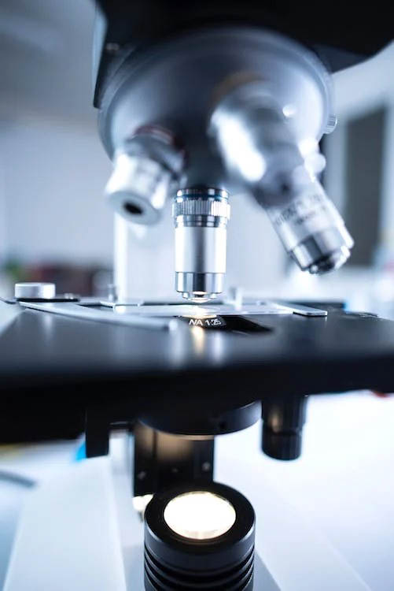
experiment method 實驗方法

results 結果

discussion 討論
outline 大綱
Introduction
In recent years, the world is facing an aging population and the population of chronic diseases is gradually rising, resulting in a serious financial burden on national health care. As we age, the human skeleton ages with us. Bone defects caused by cancer, trauma, infection, genetic deformity, or tumor are among the symptoms that also appear in the skeleton, and to avoid ineffective treatment or waste of medical resources, the treatment of these conditions is of great concern2. Osteomyelitis caused by bacterial infection is the main complication in common bone reconstruction surgery. The conventional treatment methods include surgery, chemotherapy, and radiotherapy3. However, the clinical satisfaction of these treatments can be improved.
近年來，全球面臨人口老化，慢性病人口逐漸攀升的情況下，導致國家醫療財政負擔嚴重。隨著年齡增長，人類的骨骼也會隨之老化。而同樣出現於骨骼的症狀還有癌細胞、創傷、感染、遺傳畸形或腫瘤所導致之骨缺損等，為避免無效治療或浪費醫療資源的情況發生，如何治療以上病症皆擁有極大的關注度2。常見的骨重建手術中，因細菌感染引起的骨髓炎為主要併發症。常規的治療手法有手術、化療、放射療法等3。然而，對於上述療法之臨床滿意程度仍可以改進。
 per 100 persons age 15-64.png)
 per 100 persons age 15-64-white.png)
Literature review

Larry Hench
Hench discovered Bioglass in 1969, just five years after earning his Ph.D. from Ohio State University, where he also earned his B.S. Bioglass was the first synthesized material that interacted with the body to initiate healing. Its discovery marked a significant shift in how researchers could think about biomaterials. Prior to Bioglass, researchers focused on materials that the body would tolerate without rejection. Bioglass inspired researchers to think about new ways to engineer materials for the body, which gave birth to the new field known today as regenerative medicine.
Hench在1969年發現了生物玻璃，這是他在俄亥俄州立大學獲得博士學位後僅五年的時間，他在那裡也獲得了學士學位。生物玻璃是第一種與身體互動以啟動癒合的合成材料。它的發現標誌著研究人員對生物材料的思考方式發生了重大轉變。在生物玻璃出現之前，研究人員關注的是身體能夠容忍而不產生排斥反應的材料。生物玻璃啟發了研究人員思考為身體設計材料的新方法，這催生了今天被稱為再生醫學的新領域。
Surfactant
| MCM-41 | SBA-15 | HMM-5 | TUD-1 | CMK-5 | |
| TEM image |

|

|

|

|

|
| Surfactant | CTAB | P123 | CTAB | P123 & butanol | |
| Pore size (nm) | 2-10 | 4-30 | 4-15 | 2.5-25 | 2.5-25 |
| Surface area (m2/g) | 700-1040 | 800 | |||
| Reference |
Experiment procedure


SEM
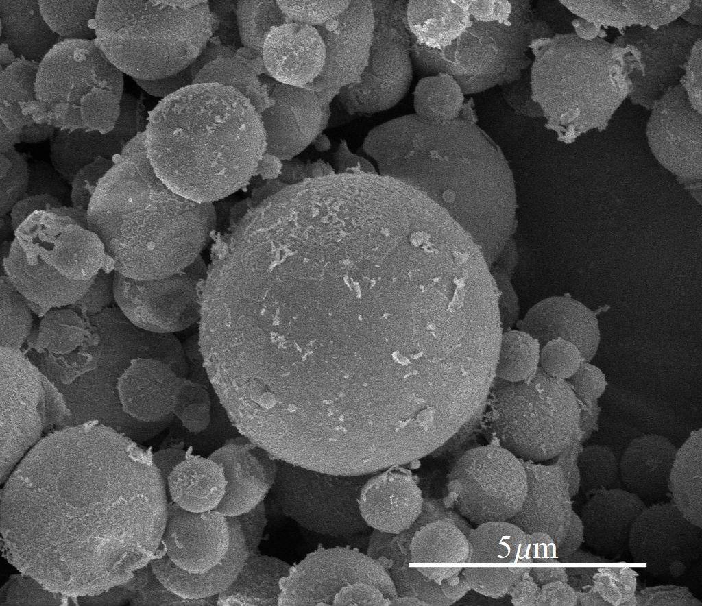
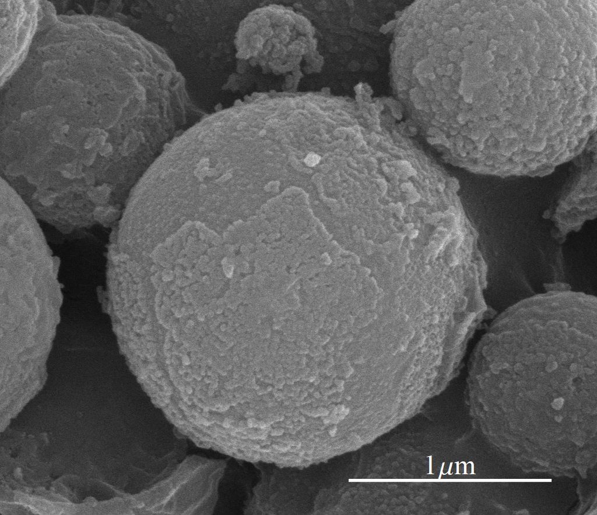
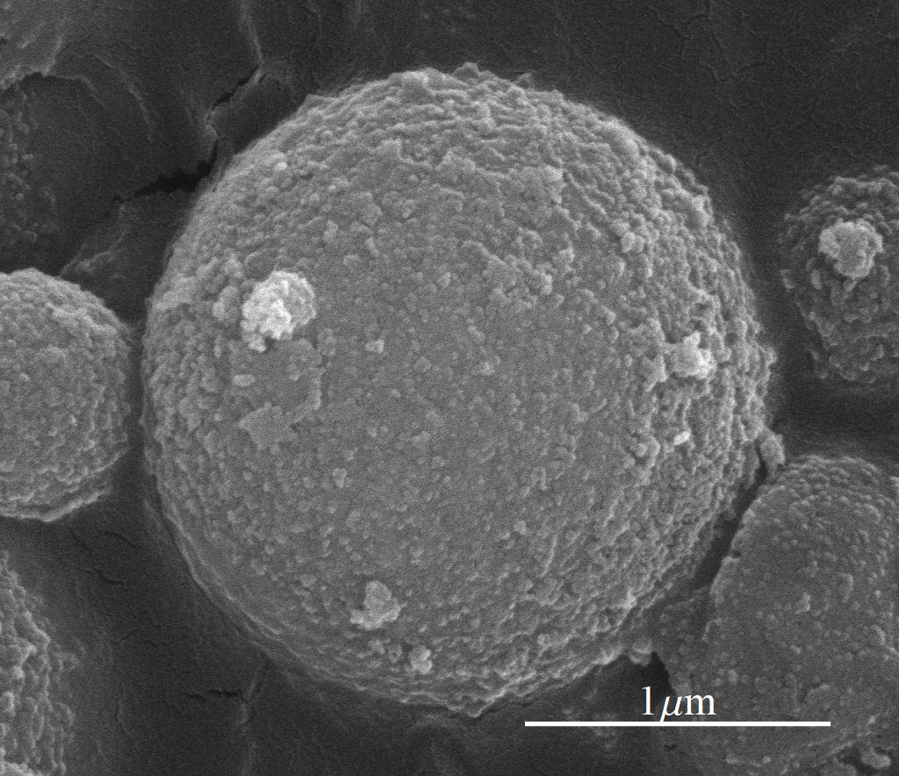
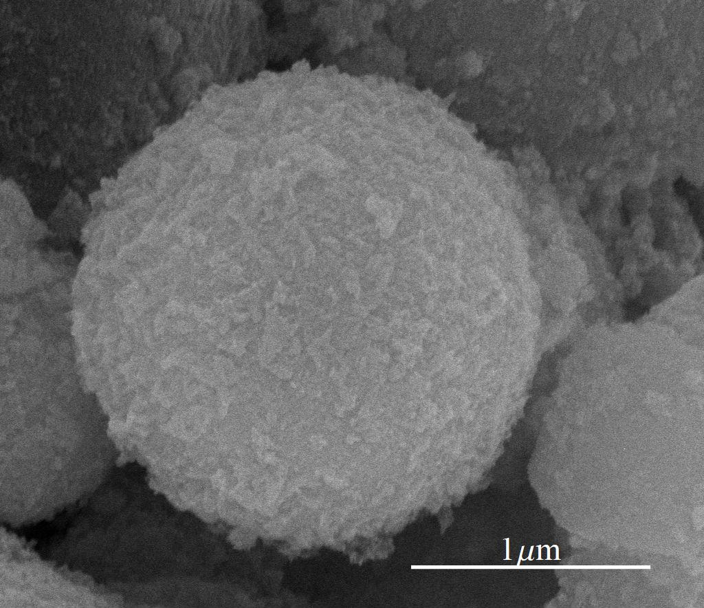
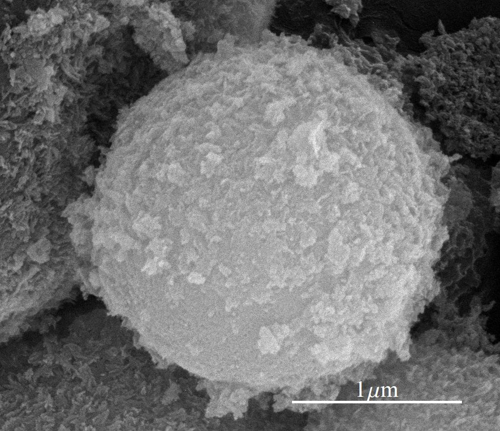
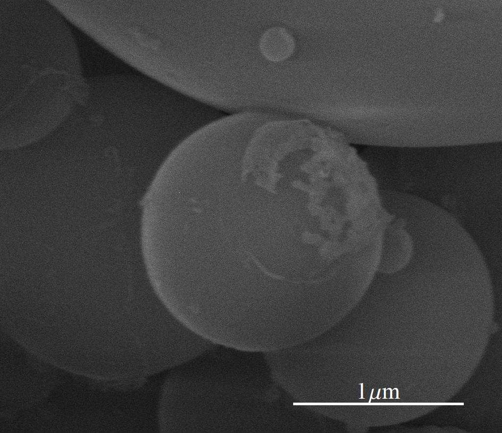
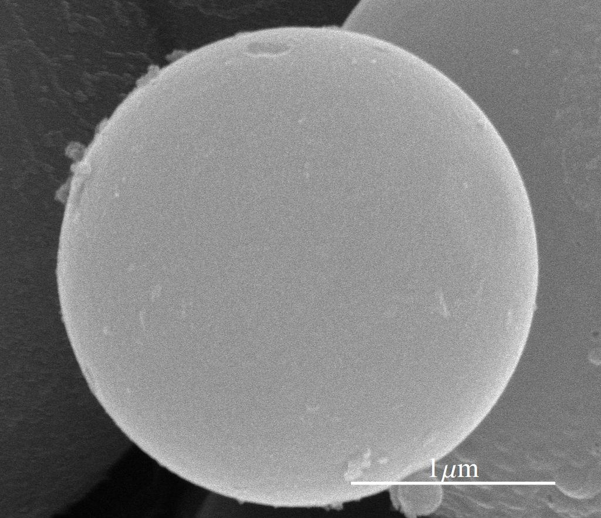
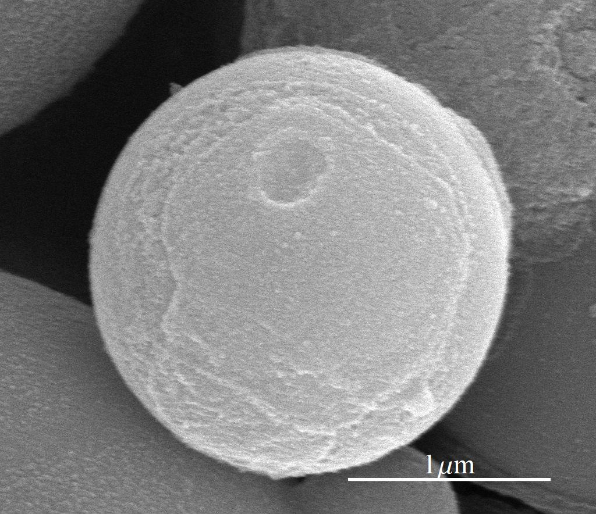
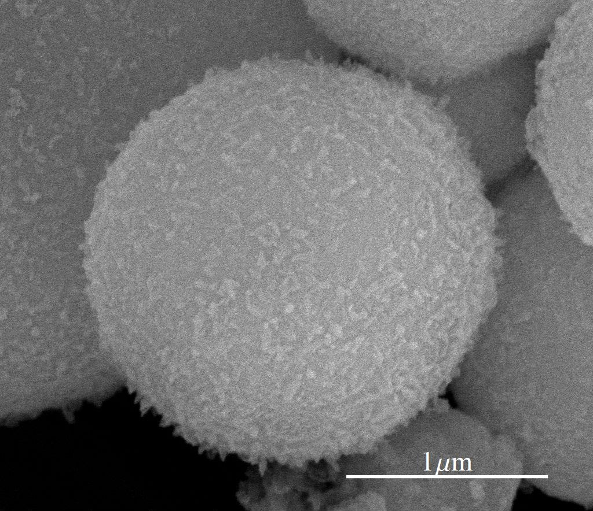
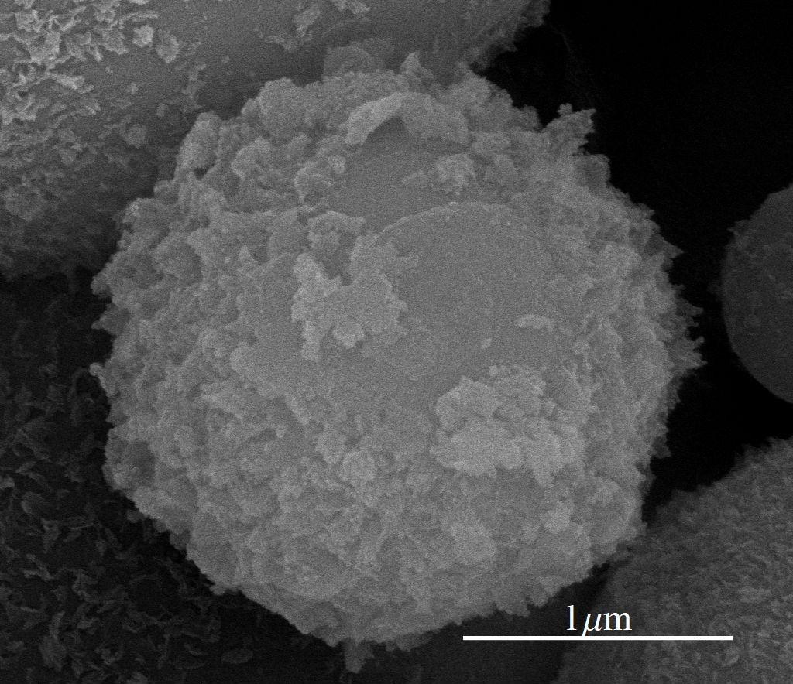
XRD


FTIR


Discussion
Search table record:
| No. | Journal title | Contributors | years | doi |
|---|---|---|---|---|
| The effect of iron incorporation on the in vitro bioactivity and drug release of mesoporous bioactive glasses | Ying Zhang | 2022 | - | |
| Functionalized mesoporous bioactive glass scaffolds for enhanced bone tissue regeneration | X. Zhang et al. | 2015 | - | |
| Hierarchically Mesoporous–Macroporous Bioactive Glasses Scaffolds for Bone Tissue Regeneration | Hui-suk Yun | 2008 | - | |
| Bioactive Glass Applications: A Literature Review of Human Clinical Trials | Hui-suk Yun | 2015 | - | |
| Bioceramics: From Concept to Clinic | Hui-suk Yun | 2015 | - | |
| Biomineralization behavior of ternary mesoporous bioactive glasses stabilized through ethanol extraction process | Hui-suk Yun | 2008 | - | |
| Preparation and in Vitro Bioactivity of Micron-sized Bioactive Glass Particles Using Spray Drying Method | Hui-suk Yun | 2015 | - | |
| An Investigation of Bioactive Glass Powders by Sol-Gel Processing | Hui-suk Yun | 2008 | - | |
| Physico-chemical and biological studies on three-dimensional porous silk/spray-dried mesoporous bioactive glass scaffolds | Hui-suk Yun | 2015 | - | |
| One-step synthesis of bioactive glass by spray pyrolysis | Hui-suk Yun | 2008 | - | |
| An Investigation of Bioactive Glass Powders by Sol-Gel Processing | Hui-suk Yun | 2015 | - | |
| The effect of iron incorporation on the in vitro bioactivity and drug release of mesoporous bioactive glasses | Hui-suk Yun | 2011 | - | |
| Hierarchically Mesoporous–Macroporous Bioactive Glasses Scaffolds for Bone Tissue Regeneration | Hui-suk Yun | 2011 | - | |
| Bioceramics: From Concept to Clinic | Hui-suk Yun | 2015 | - | |
| Physico-chemical and biological studies on three-dimensional porous silk/spray-dried mesoporous bioactive glass scaffolds | Hui-suk Yun | 2007 | - | |
| Functionalized mesoporous bioactive glass scaffolds for enhanced bone tissue regeneration | Hui-suk Yun | 2011 | - | |
| Hierarchically Mesoporous–Macroporous Bioactive Glasses Scaffolds for Bone Tissue Regeneration | Hui-suk Yun | 1992 | - | |
| Hierarchically Mesoporous–Macroporous Bioactive Glasses Scaffolds for Bone Tissue Regeneration | Hui-suk Yun | 1992 | - | |
| Hierarchically Mesoporous–Macroporous Bioactive Glasses Scaffolds for Bone Tissue Regeneration | Hui-suk Yun | 1992 | - | |
| Hierarchically Mesoporous–Macroporous Bioactive Glasses Scaffolds for Bone Tissue Regeneration | Hui-suk Yun | 1992 | - | |
| Hierarchically Mesoporous–Macroporous Bioactive Glasses Scaffolds for Bone Tissue Regeneration | Hui-suk Yun | 1992 | - | |
| Hierarchically Mesoporous–Macroporous Bioactive Glasses Scaffolds for Bone Tissue Regeneration | Hui-suk Yun | 1992 | - | |
| Hierarchically Mesoporous–Macroporous Bioactive Glasses Scaffolds for Bone Tissue Regeneration | Hui-suk Yun | 1992 | - | |
| Hierarchically Mesoporous–Macroporous Bioactive Glasses Scaffolds for Bone Tissue Regeneration | Hui-suk Yun | 1992 | - | |
| Hierarchically Mesoporous–Macroporous Bioactive Glasses Scaffolds for Bone Tissue Regeneration | Hui-suk Yun | 1992 | - | |
| Hierarchically Mesoporous–Macroporous Bioactive Glasses Scaffolds for Bone Tissue Regeneration | Hui-suk Yun | 1992 | - | |
| Hierarchically Mesoporous–Macroporous Bioactive Glasses Scaffolds for Bone Tissue Regeneration | Hui-suk Yun | 1992 | - | |
| Hierarchically Mesoporous–Macroporous Bioactive Glasses Scaffolds for Bone Tissue Regeneration | Hui-suk Yun | 1992 | - |